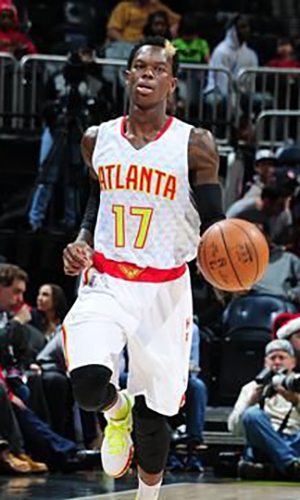

|  |
Матчи |
77 |
|
Передачи (всего/среднее) |
317 |
4.1 |
| В основе |
10 |
|
Подборы в защите (всего/среднее) |
135 |
1.8 |
| Время (всего/среднее) |
1515:44 |
19:41 |
Подборы в атаке (всего/среднее) |
29 |
0.4 |
| Очки (всего/среднее) |
768 |
10 |
Подборы (всего/среднее) |
164 |
2.1 |
| 2-очковые броски (всего/среднее) |
232/517 |
3/6.7 |
Перехваты (всего/среднее) |
49 |
0.6 |
| 2-очковые броски (% реализации) |
44.9% |
|
Потери (всего/среднее) |
149 |
1.9 |
| 3-очковые броски (всего/среднее) |
52/147 |
0.7/1.9 |
Блокшоты (всего/среднее) |
4 |
0.1 |
| 3-очковые броски (% реализации) |
35.4% |
|
Блокшоты соперника (всего/среднее) |
74 |
1 |
| Штрафные броски (всего/среднее) |
148/179 |
1.9/2.3 |
Фолы (всего/среднее) |
127 |
1.6 |
| Деннис Шрёдер |
Штрафные броски (% реализации) |
82.7% |
|
Коэффициент полезности (всего/среднее) |
541 |
7 |